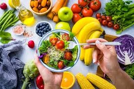

El programa de capacitación se define como la descripción detallada de un conjunto de actividades de instrucción y aprendizaje estructuradas de tal forma que conduzcan a alcanzar una serie de objetivos previamente determinados.
Los talleres participativos son una herramienta clave para fomentar el aprendizaje colectivo e individual, generando información valiosa y promoviendo la participación equitativa en proyectos comunitarios. A través de metodologías innovadoras y participativas, estos talleres permiten que las comunidades experimenten el trabajo colaborativo y refuercen su compromiso social.
El propósito de estos talleres es proporcionar herramientas educativas y prácticas que impulsen el desarrollo local. Al enfocarse en la capacitación y la innovación, se busca generar un impacto positivo en la calidad de vida de las personas, especialmente en aquellas con condiciones de salud específicas, como enfermedades metabólicas
Entonces, una alimentación saludable es aquella que nos ayuda a cubrir las necesidades nutricionales que requerimos para cumplir con sus funciones metabólicas o que nuestro cuerpo se desempeñe correctamente, como el proporcionar la energía y con ello mejorar el rendimiento; que contribuye al crecimiento y desarrollo de niños y adolescentes, incluso ayuda a la concentración y atención en actividades más complejas.
Una alimentación saludable ayuda a tener un buen estado de salud, a sanar y llevar los procesos de recuperación, a combatir enfermedades e infecciones y controlar enfermedades metabólicas, como el sobrepeso, obesidad, hipertensión y hasta la diabetes.
Para lograrlo debemos de llevar una dieta que incluya una mezcla alimentos sólidos y líquidos de todos los grupos de alimentos, ricos en macronutrientes, agua, fibra, vitaminas y minerales; considerar la edad, sexo, actividades que realizamos, el estado de salud es muy importante, pero de igual forma se llega a contemplar los usos, costumbres y hasta los recursos económicos.
